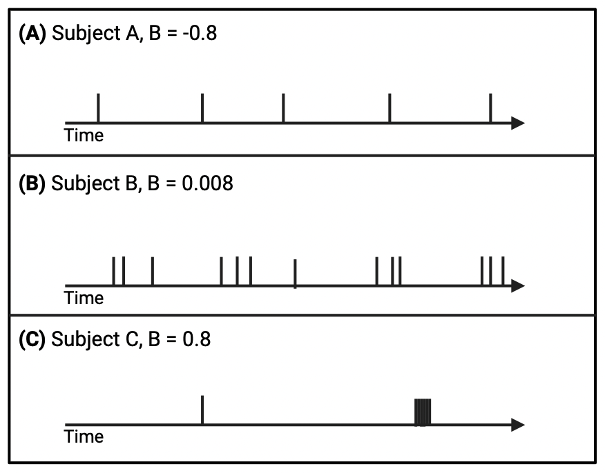
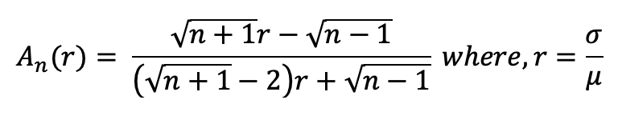
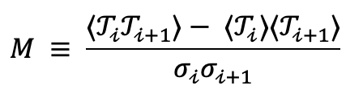

What is Bursty Dynamics?
bursty_dynamics is a Python package designed to facilitate the analysis of temporal patterns in longitudinal data. It provides functions to calculate the burstiness parameter (BP) and memory coefficient (MC), detect event trains, and visualize results.
Key Features
Burstiness Parameter (BP) and Memory Coefficient (MC) Calculation: Calculate BP and MC to quantify the irregularity and memory effects of event timing within longitudinal data.
Event Train Detection: Detect and label event trains based on user-defined criteria such as maximum inter-event time and minimum burst size.
Train-Level Analysis: Analyse BP and MC for detected event trains, providing insights into temporal patterns within clusters of events.
Visualization Tools: Visualise temporal patterns with scatter plots, histograms, kernel density estimates (KDE), and more, facilitating interpretation of analysis results.
User-Friendly Interface: Designed for ease of use, with clear function parameters and output formats, making it accessible to both novice and experienced users.
What is Burstiness parameter?
{kind=link}
Burstiness parameter is a quantitative measure of the irregularity of events occurring over time. The burstiness parameter B (Goh and Barabasi, 2008) is measured using the mean (μ) and standard deviation (σ) of the inter-event time distribution as shown in the equation below.
{kind=link}
The score ranges between -1 and 1, where a score closer to -1 indicates more regular intervals between events, a score near 0 suggests a random distribution of events, and a value score to 1 indicates a more severe burst pattern, when σ→∞, characterized by rapid, intense occurrences of events. This score is crucial in differentiating between regular, random, and bursty time series. However, the burstiness score in the equation above is dependent on the length of events in the time series. Therefore, we use the measure, burstiness parameter A, defined by (Kim and Jo, 2016) as an extension of (Goh and Barabasi, 2008) that accounts for the varying length of events.
{kind=link}